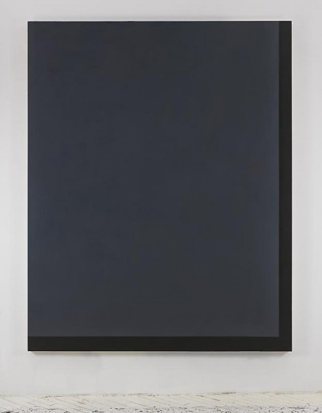

-
Byron Kim’s Night: Sealing Off the Wonder of the Sublime
by Brian Dupont December 21, 2011
Byron Kim, Untitled (for J.B.), 2010, acrylic on canvas, 90 x 72 inches, via James Cohan Gallery
In his exhibition Night at James Cohan Gallery, Byron Kim presents 9 paintings of the night sky, transcribed from memory. Their treatment is at once both abstract and literal, taking an effusive memory and attempting to faithfully record it in acrylic on canvas. Such a project is necessarily quixotic, requiring a multitude of peculiar factors (time of night; conditions of atmosphere and pollution; and light) always being modified by the slippery workings of memory and dependent on the painter’s own process across a single canvas and its identically-sized relations that sit beside it in the studio. Even as architectural obstructions to his view (common to the view of anything in New York City) are represented, they are abstracted and flattened to bands that contrast the sky with no effort at spatial or representational illusionism. Even with subject and intent so clearly delineated Kim remains fundamentally an abstract painter, mining the space where flat color and solid pigment is the primary carrier of meaning.
The press release states that his “work sits at the threshold between abstraction and representation, between conceptualism and pure painting.” While not inaccurate, this situates the artist between such polar extremes that his work could fall almost anywhere. Indeed, almost every painter falls within these boundaries; at issue then is how to map Kim’s practice onto the landscape of abstract painting; what sort of conceptualist is Kim, and what sort of pure painter, and to what purpose is the demarcation?
The same text’s invocation of older abstract artists is telling. While the literalness of Agnes Martin and the dark pallet of Ad Reinhardt relate easily enough to the exhibition, only Mark Rothko remains as a link to the abstract sublime and a deeper engagement with the intimated content of the work. Yet these comparisons feel superficial. Rothko’s floating bands of color were the result of an artist making it out of himself, in a search to plumb abstraction for a deeper meaning. Kim does not engage the sublime directly; instead he approaches it via the most common and readily available agency: nature. The easy infinity of the night sky is there for all, and Kim functions as a journalist looking out for the minute changes we all might observe if we only looked up and paid attention. In his reports on nature and its subtle transformations his works instead relate more to abstract painters of a later generation, Ellsworth Kelly, (and by way of Sheldon Nodelman) Brice Marden and David Novros.
Novros’s flat painted elements, referencing objecthood, yet stubbornly remaining painting, frame the wall as Kim’s abstract bands of architecture frame the night sky. Marden has long been one of the most influential and acclaimed monochrome painters. Kim’s touchstone work Synecdoche partakes of Marden’s signature wax medium, and his views of the United Nations in paintings take the structure of a Marden monochrome and turn it into a slyly-representational puzzle. Here is where we find the afternoon conceptualist, slyly playing with the constituent parts of representation.
Byron Kim, Sunday Painting 9.12.04, 2003, acrylic and gouache on panel, 14 x 14 inches, via hosfelt gallery
Just as Kelly took fragments and slices of his everyday environment as the foundation for his early work (shadows falling on a flight of stairs, the visual alliteration of stripes and patches of fabric on a bathing tent, or the positive and negative shapes in a Paris museum window), Kim’s abstraction is rooted in everyday experiences and observations. If there is a conceptual approach to be found in Kim’s observations of his surroundings it lies in his treating the daily practice of painting as a kind of journalistic reporting on his search for the sublime. A similar tack can be found in his Sunday Paintings, where he has recorded the sky of Prospect Park week in and week out for ten years. Those works are more faithful records of the sky, painted (mostly) from life en plein air. Kim’s inscriptions of the date and personal notes from the time of their making give those works the sense of a diary or working notebook, and, by the inclusion of text on the surface, a more direct link to conceptual practice for their simultaneous challenge to the painting as window or the object implied by the monochrome.
By contrast, the large-scale works in the Night series are limited by the conceptual framework that is attached to them. Reporting and the personal suggestion of a diary has here given way to spin and complete control of the message; since Kim is a conceptual painter (by general understanding, rather than by the elucidation of the paintings) there is no space left for the actuality of these works and the simple process of making them. The paintings in Night have their meanings frozen by a need to make sure there is no misinterpreting the artist’s intentions. Surely the exhibition title and the paintings would have been enough, but the theme is hammered home with all the subtlety of media talking points. Kim’s most successful work remains fundamentally open ended, and open to ideas. When it is no longer enough for the artist to mine and explore the subtleties of the world around him, this openness is lost. The resulting paintings are hermetically sealed off from the wonder of the sublime, and, no matter how beautiful or moving they are, remain airless.

Leave a Comment